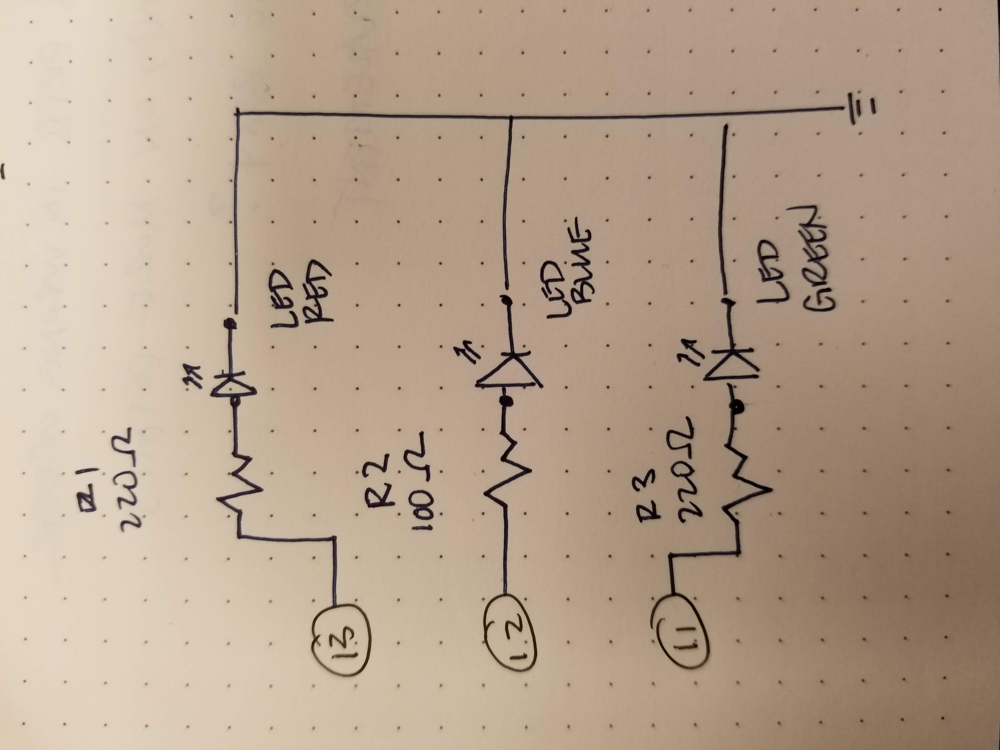

Assignment 1: Blink
Overview
Implement a circuit on breadboard to make at least 3 LEDs blink in a pattern.
A snippet of the schematic:



When assuming that LEDs are run at 20 mA, it is calculated that the red, blue, and green LED need 160, 85, and 160 Ohms of resistance, respectively. I used the 220 resistor for red and green LED, and 100 resistor for the blue LED.
What the circuit looks like:

Here's my code:
// the setup function runs once when you press reset or power the board
void setup() {
pinMode(13, OUTPUT); // initiates RED LED
pinMode(12, OUTPUT); // initiates BLUE LED
pinMode(11, OUTPUT); // initiates GREEN LED
}
// the loop function runs over and over again forever
void loop() {
digitalWrite(13, HIGH); // turn the RED LED on (HIGH is the voltage level)
delay(150); // wait for 0.15 seconds
digitalWrite(13, LOW); // turn the RED LED off by making the voltage LOW
delay(150); // wait for 0.15 seconds
digitalWrite(12, HIGH); // turn the BLUE LED on (HIGH is the voltage level)
delay(150); // wait for 0.15 seconds
digitalWrite(12, LOW); // turn the BLUE LED off by making the voltage LOW
delay(150); // wait for 0.15 seconds
digitalWrite(11, HIGH); // turn the GREEN LED on (HIGH is the voltage level)
delay(150); // wait for 0.15 seconds
digitalWrite(11, LOW); // turn the GREEN LED off by making the voltage LOW
delay(150); // wait for 0.15 seconds
}
See it in action: